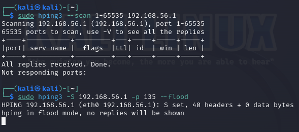
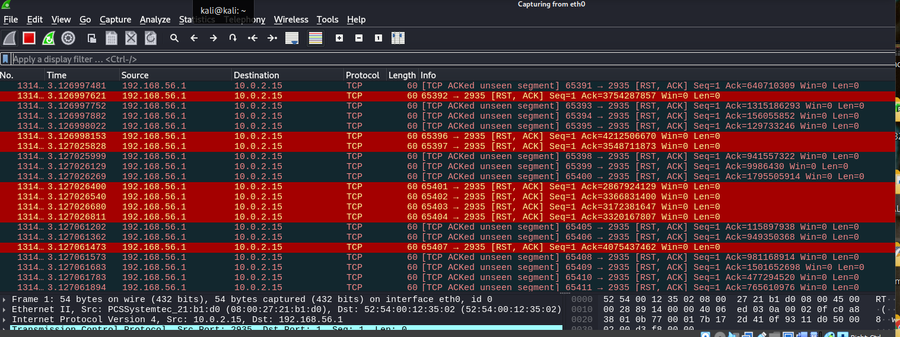
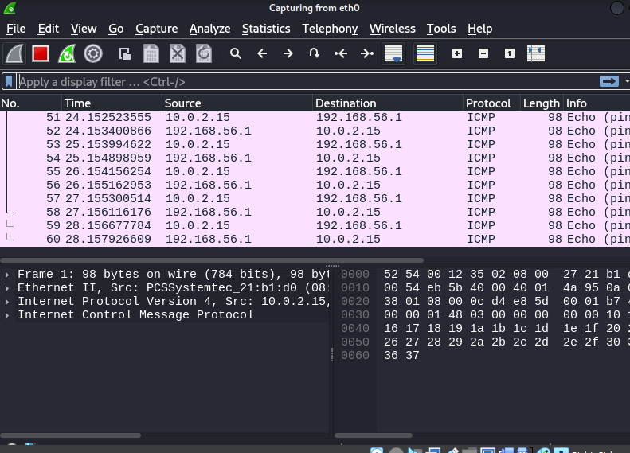

Wireshark
An application that records packets from a network connection, such one between your computer and the internet or your home office, is called a network protocol analyzer, or Wireshark. In a standard Ethernet network, a discrete unit of data is called a packet. The most popular packet sniffer in the world is called Wireshark.
Packet capture:
Wireshark captures whole traffic streams, perhaps tens of thousands of packets at a time, by listening to a network connection in real time.Filtering:
With the use of filters, Wireshark can chop and dice all of this haphazard live data. You can get only the information you require by using a filter.Visualisation:
Like other decent packet sniffers, Wireshark lets you go straight into the centre of a network packet. You may even see complete network streams and chats using it.I used wireshark to simulate a DoS attack using Kali Linux on a random IP address:

hping3: This is the command to run the hping3 utility.
-S: This flag indicates that the packets should have the SYN flag set, which is often used for establishing a connection.-p 80: This flag specifies the destination port number. In this case, it's port 80, which is the default port for HTTP.
-c 30: This flag sets the count of packets to send to 30.
--flood: This flag sends packets as fast as possible without pausing, essentially flooding the target. It tries to send packets as quickly as the system allows, which can potentially create a denial of service (DoS) attack.
I also used the hping3 --scan command to scan address ports:

Furthermore, here is a demonstration when pinging the address:

You can see that carrying out DOS flood assaults is not that difficult. These attacks' simplicity serves as a stark illustration of the risk that internet users, particularly corporate users, face (attacks of this nature are uncommon against domestic users). DDOS assaults can occasionally be deadly for businesses and very challenging to stop.